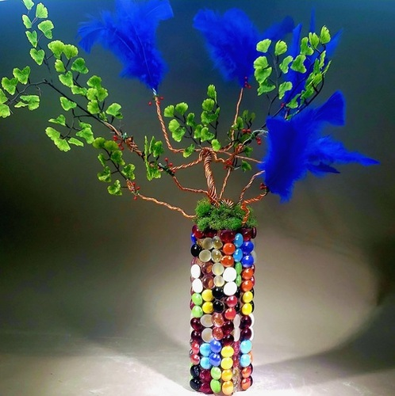
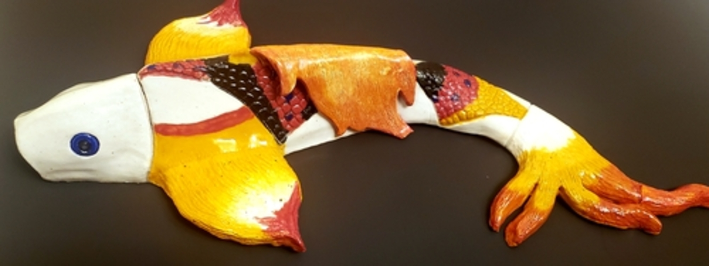
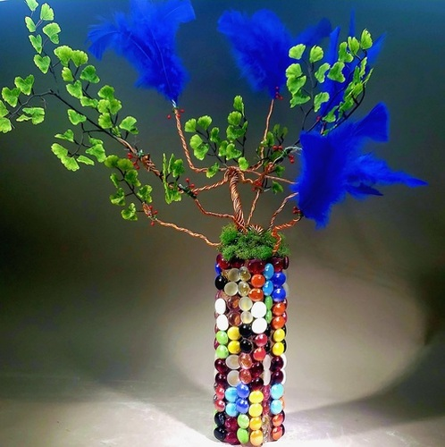
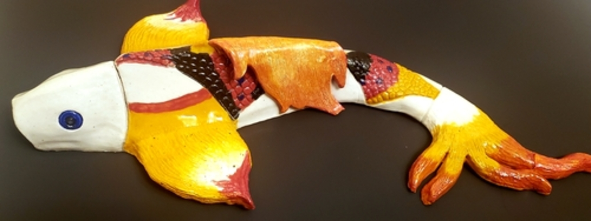

Jasmin Galan
I am a professional ceramics artist whose concentration focuses on further enhancing the beauty of nature by creating intricately designed animal sculptures. I have over 7 years of experience working with ceramics and multiple art media.
Initially, I had decided to take a ceramics class during my first year of high school because I wanted to try something new, but that, later on, turned into a career for me, from which I can take pleasure in doing something I am passionate about, while also teaching others new skills, as well as taking part in charities that work towards ending hunger.
I primarily focus on creating animal sculptures, but I also know skills such as how to throw pottery (bowls, cups, vases, etc.) on the wheel, how to work with low and high-fire glazes, and how to bisque fire pieces. I enjoy exploring how I can integrate multimedia material into my ceramic pieces and have started to expand the selection of materials that I utilize so that I can incorporate materials that include: wood, moss, glass, stone, and wire. My art pieces have been displayed in multiple art shows, which include schools across the Riverside Unified School District, the Riverside Art Museum, and the University of California Riverside. Many of my art pieces have won Best in Show awards and have been praised for their color selection, craftsmanship, and interpretation of nature’s beauty. I plan to continue expanding my knowledge and expertise in ceramics by traveling around the world and learning from highly experienced Ceramicists so that I can do my part in preserving the art of ceramics and teach others how the art of creating sculptures and pottery can bring a significantly positive change into their lives.
Experience
Teacher
• Helped customers of Mud Hut Pottery Studio learn how to make pottery
• Taught the paint your own pottery classes
• Experience with sculpting, pottery, low and high-fire glazes, and bisque firing
Staff
• Responsible for distributing soup to customers who purchased bowls
• Made bowls for the charity event decicated to ending hunger
• In charge of selecting and packing bowls for the charity
Teaching Assistant
• Helped beginning students
• Organized the ceramic pieces in the kiln
• Prepared clay for the classes
• Selected art pieces for the art shows
Education
UC Riverside
Portfolio




 